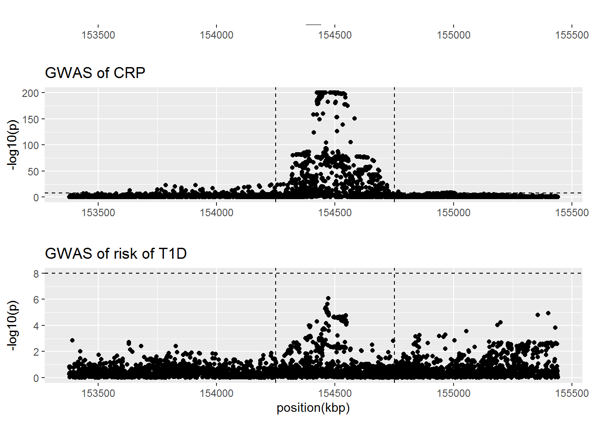
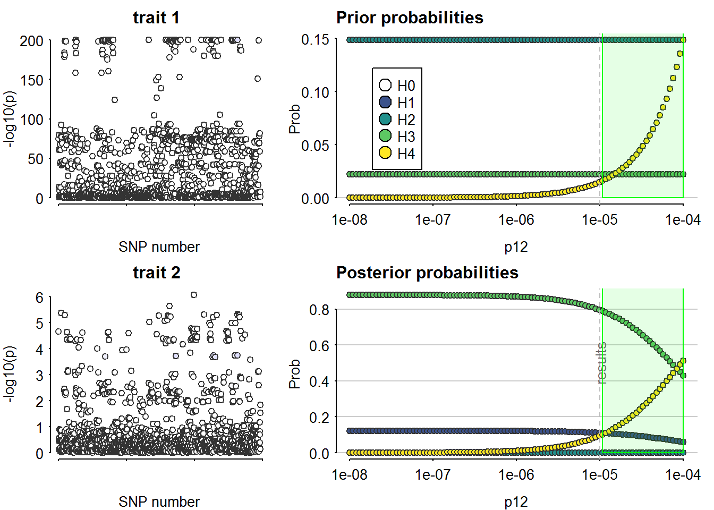
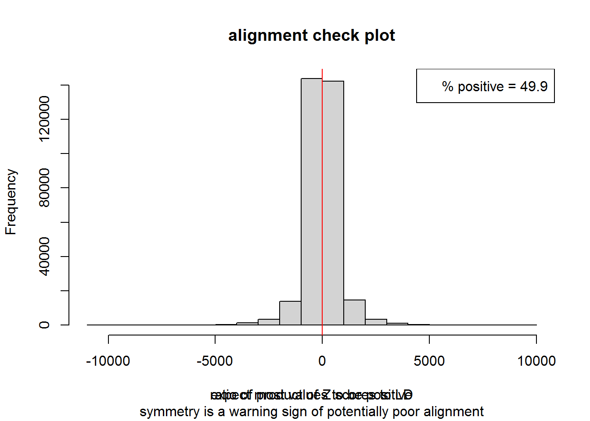
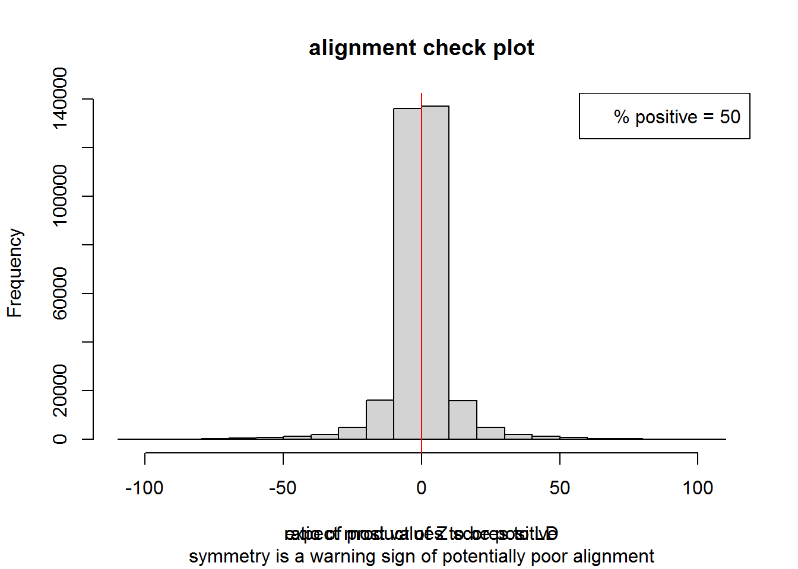
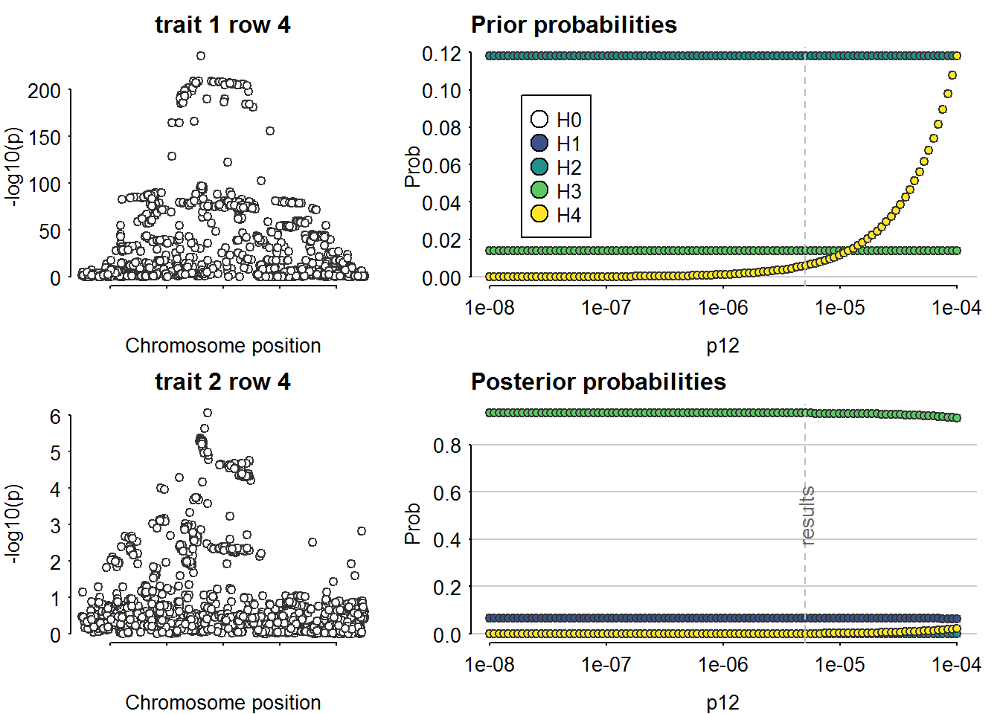
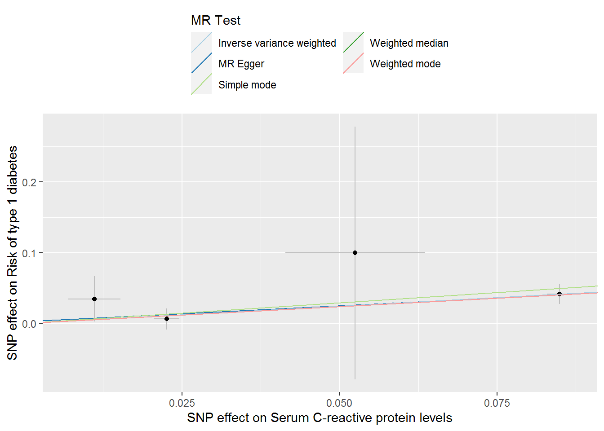
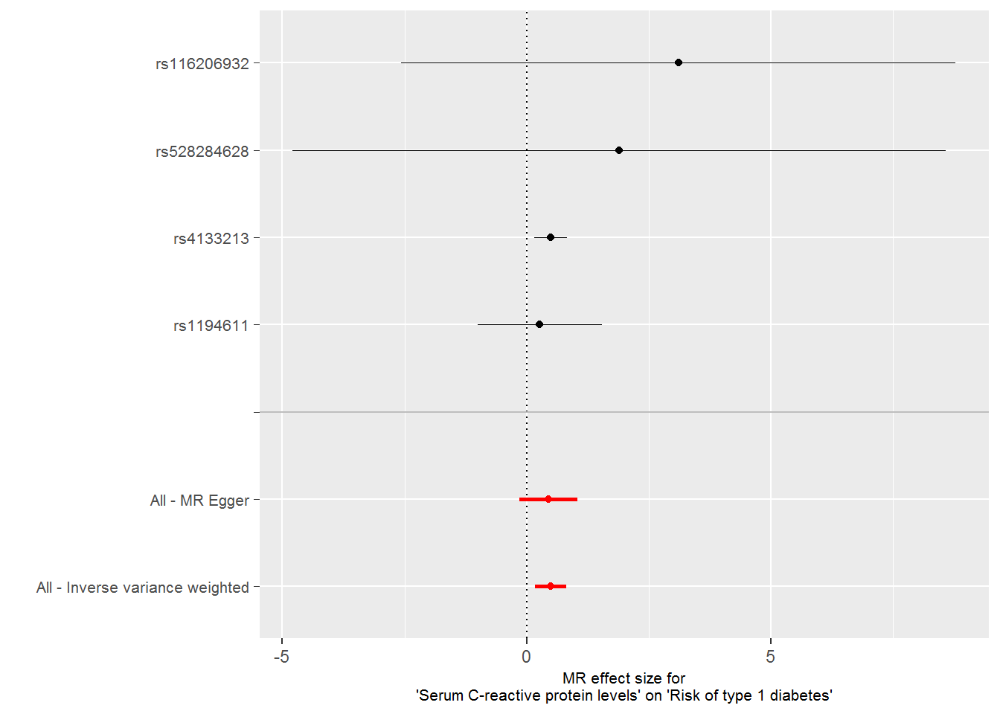

Last updated: 2023-04-26
Checks: 7 0
Knit directory: Rotaatio-2022/
This reproducible R Markdown analysis was created with workflowr (version 1.7.0). The Checks tab describes the reproducibility checks that were applied when the results were created. The Past versions tab lists the development history.
Great! Since the R Markdown file has been committed to the Git repository, you know the exact version of the code that produced these results.
Great job! The global environment was empty. Objects defined in the global environment can affect the analysis in your R Markdown file in unknown ways. For reproduciblity it’s best to always run the code in an empty environment.
The command set.seed(20220313) was run prior to running
the code in the R Markdown file. Setting a seed ensures that any results
that rely on randomness, e.g. subsampling or permutations, are
reproducible.
Great job! Recording the operating system, R version, and package versions is critical for reproducibility.
Nice! There were no cached chunks for this analysis, so you can be confident that you successfully produced the results during this run.
Great job! Using relative paths to the files within your workflowr project makes it easier to run your code on other machines.
Great! You are using Git for version control. Tracking code development and connecting the code version to the results is critical for reproducibility.
The results in this page were generated with repository version 36aa64f. See the Past versions tab to see a history of the changes made to the R Markdown and HTML files.
Note that you need to be careful to ensure that all relevant files for
the analysis have been committed to Git prior to generating the results
(you can use wflow_publish or
wflow_git_commit). workflowr only checks the R Markdown
file, but you know if there are other scripts or data files that it
depends on. Below is the status of the Git repository when the results
were generated:
Ignored files:
Ignored: .RData
Ignored: .Rhistory
Ignored: .Rproj.user/
Ignored: analyses/.Rhistory
Untracked files:
Untracked: .Rprofile
Untracked: .gitattributes
Untracked: .gitignore
Untracked: Functional_variants.pdf
Untracked: README.md
Untracked: T1DSCREEN.Rproj
Untracked: _workflowr.yml
Untracked: analyses/_site.yml
Untracked: analyses/about.Rmd
Untracked: analyses/license.Rmd
Untracked: analyses/zz_archive/
Untracked: analyses/zz_trash/
Untracked: articles/
Untracked: code/
Untracked: data/
Untracked: docs.zip
Untracked: figures/
Untracked: output/
Untracked: plans/
Untracked: references/
Untracked: workflow.txt
Untracked: zz_unsorted/
Unstaged changes:
Modified: analyses/CXCL10.Rmd
Modified: analyses/IL12B.Rmd
Note that any generated files, e.g. HTML, png, CSS, etc., are not included in this status report because it is ok for generated content to have uncommitted changes.
These are the previous versions of the repository in which changes were
made to the R Markdown (analyses/CRP.Rmd) and HTML
(docs/CRP.html) files. If you’ve configured a remote Git
repository (see ?wflow_git_remote), click on the hyperlinks
in the table below to view the files as they were in that past version.
| File | Version | Author | Date | Message |
|---|---|---|---|---|
| Rmd | 36aa64f | Jaakko Koskenniemi | 2023-04-26 | First commit |
| html | 24d77f3 | Jaakko Koskenniemi | 2022-11-05 | Build site. |
| html | ff80817 | Jaakko Koskenniemi | 2022-11-05 | Build site. |
| Rmd | 5cf5846 | Jaakko Koskenniemi | 2022-11-05 | wflow_publish("analyses/CRP.Rmd") |
Load packages and import data
library(tidyverse)-- Attaching packages --------------------------------------- tidyverse 1.3.1 --v ggplot2 3.4.1 v purrr 0.3.4
v tibble 3.1.7 v dplyr 1.0.9
v tidyr 1.2.0 v stringr 1.4.0
v readr 2.1.2 v forcats 0.5.1Warning: package 'ggplot2' was built under R version 4.2.2-- Conflicts ------------------------------------------ tidyverse_conflicts() --
x dplyr::filter() masks stats::filter()
x dplyr::lag() masks stats::lag()library(data.table)
Attaching package: 'data.table'The following objects are masked from 'package:dplyr':
between, first, lastThe following object is masked from 'package:purrr':
transposelibrary(coloc)This is a new update to coloc.library(TwoSampleMR)TwoSampleMR version 0.5.6
[>] New: Option to use non-European LD reference panels for clumping etc
[>] Some studies temporarily quarantined to verify effect allele
[>] See news(package='TwoSampleMR') and https://gwas.mrcieu.ac.uk for further detailslibrary(ggpubr)
library(ieugwasr)API: public: http://gwas-api.mrcieu.ac.uk/
Attaching package: 'ieugwasr'The following object is masked from 'package:TwoSampleMR':
ld_matrixlibrary(rio)Warning: package 'rio' was built under R version 4.2.2library(here)Warning: package 'here' was built under R version 4.2.2here() starts at C:/Users/jajoko/Seafile/Rotaatio-2022here::i_am("analyses/IL6R.Rmd")here() starts at C:/Users/jajoko/Seafile/Rotaatio-2022IL6R_crp <- read_exposure_data("data/export/IL6R_crp_TwoSampleMR.csv", sep=",")Warning in format_data(as.data.frame(exposure_dat), type = "exposure", snps =
NULL, : eaf column is not numeric. Coercing...Warning in format_data(as.data.frame(exposure_dat), type = "exposure", snps = NULL, : The following SNP(s) are missing required information for the MR tests and will be excluded
rs143640806
rs76058318
rs11264299
rs55658698
rs11264336
rs6663988
rs7532808
rs7517127
rs10908429
rs11264262
rs74115869
rs2878411
rs11264275
rs12044470
rs12045303
rs4845676
rs11264359
rs7416976
rs12025532
rs11264370
rs111360475
rs12028416
rs12026638IL6R_T1D <- read_outcome_data("data/export/IL6R_T1D_TwoSampleMR.csv", sep=",")
IL6R <- harmonise_data(IL6R_crp, IL6R_T1D)Harmonising Serum C-reactive protein levels (4vucPG) and Risk of type 1 diabetes (xN25Oe)Removing the following SNPs for incompatible alleles:
rs372431155, rs57829528Removing the following SNPs for being palindromic with intermediate allele frequencies:
rs1010225, rs10127752, rs1027809, rs1043608, rs10465961, rs10494300, rs10737174, rs10752606, rs10752613, rs10752641, rs10796934, rs10796936, rs10796937, rs10796942, rs10797030, rs10797049, rs10888562, rs10908424, rs10908475, rs10908557, rs10908839, rs10908843, rs10908848, rs111489497, rs111508464, rs111552903, rs111728068, rs111742980, rs111810442, rs111923597, rs112042901, rs11205285, rs11205288, rs11205292, rs112090495, rs112099020, rs112173825, rs112227957, rs112385928, rs112431116, rs112556683, rs11264252, rs11264256, rs11264261, rs11264266, rs11264278, rs11264314, rs11264318, rs11264345, rs11264346, rs11264349, rs11264353, rs11264355, rs11264360, rs11264363, rs11264366, rs11264865, rs11264964, rs11264974, rs11265116, rs11265299, rs11265539, rs11265614, rs112684415, rs112746338, rs112818818, rs113117543, rs1131397, rs113541380, rs113650000, rs113877196, rs113892626, rs113976457, rs114138760, rs114476878, rs114539447, rs114697636, rs114772434, rs114779784, rs114812453, rs115341134, rs11548102, rs115543519, rs115584241, rs115654990, rs115729781, rs115736167, rs115800464, rs11580178, rs11581730, rs11582846, rs115834760, rs11585145, rs11585416, rs11586701, rs11589043, rs11589126, rs11590325, rs11590354, rs115904929, rs11590941, rs115952862, rs116036274, rs116042776, rs116122162, rs116246815, rs116306348, rs116528661, rs116601425, rs116620881, rs11680, rs116810936, rs11799384, rs11801338, rs11802588, rs11802757, rs11802893, rs11807418, rs11807461, rs1194592, rs1194600, rs12021631, rs12025371, rs12025843, rs12026113, rs12032520, rs12032720, rs12034788, rs12041850, rs12042217, rs12042562, rs12043224, rs12044063, rs12045838, rs12048829, rs12049455, rs12068128, rs12068175, rs12068256, rs12071117, rs12077870, rs12081433, rs12087736, rs12095061, rs12097725, rs12117078, rs12119516, rs12119678, rs12123405, rs1212352, rs12124333, rs12125018, rs12127600, rs12127609, rs12128435, rs12129468, rs12133492, rs12133662, rs12136094, rs12139537, rs12141385, rs12143987, rs1218557, rs1218562, rs1218584, rs1218591, rs1218602, rs12354278, rs12403159, rs12404174, rs12407919, rs12408170, rs12408458, rs12563213, rs12564669, rs12565279, rs12726350, rs12730000, rs12730186, rs12732972, rs12733060, rs12734374, rs12737861, rs12743874, rs12744124, rs12748146, rs12748732, rs12749691, rs12759389, rs138905898, rs138950537, rs138981684, rs139330543, rs139460994, rs139511404, rs1395565, rs139573930, rs139657540, rs139935284, rs139985350, rs140242999, rs140309215, rs140335079, rs140342156, rs140676308, rs140841369, rs1409366, rs141006941, rs141246474, rs141444337, rs141544194, rs141642906, rs141649213, rs141943605, rs142447090, rs142567407, rs142681663, rs142712385, rs142803678, rs1428807849, rs143478056, rs143612128, rs143677457, rs144230470, rs144250855, rs144518643, rs144733142, rs144926241, rs144954053, rs145746324, rs145796415, rs1462854, rs146472527, rs146588776, rs147227526, rs147276548, rs147350405, rs1475363, rs147627912, rs147687610, rs147722147, rs147743808, rs148246505, rs148261599, rs148838862, rs149713996, rs149754741, rs149876305, rs150021479, rs150347352, rs150352963, rs1506983, rs150836752, rs150961524, rs151220053, rs151224807, rs151256463, rs1546818, rs1552902, rs1619081, rs16835332, rs16835393, rs16835437, rs16836414, rs17367421, rs1760794, rs1760795, rs1760802, rs1760803, rs17663129, rs1777931, rs180679820, rs1807042, rs181141575, rs181301024, rs181377803, rs181384680, rs181769909, rs181793634, rs181862028, rs182046644, rs182295931, rs182483636, rs184270497, rs184358800, rs184545875, rs184757478, rs184958553, rs185104823, rs185316420, rs185938277, rs186110340, rs186215370, rs186343787, rs186405483, rs186436226, rs186481001, rs186537179, rs186658647, rs186791865, rs187025149, rs187206895, rs187684266, rs188344264, rs188696147, rs188932338, rs189397067, rs189825172, rs190060471, rs191087426, rs191135333, rs191429407, rs191595264, rs191774909, rs191865270, rs191910137, rs193005451, rs1948143, rs1976559, rs200401811, rs200651324, rs200891564, rs200925256, rs201049228, rs202002227, rs202241204, rs2072659, rs2242194, rs2483711, rs2494668, rs2633433, rs28372838, rs28410699, rs28510471, rs28518786, rs28530583, rs28594230, rs28657057, rs28689606, rs28696219, rs28715621, rs28727553, rs28730729, rs2879788, rs2916222, rs2974931, rs2986213, rs2990220, rs2990246, rs3002660, rs3006412, rs3006413, rs3006422, rs3006482, rs3014822, rs3014837, rs3014838, rs34074094, rs34195153, rs34292822, rs34335016, rs34390599, rs34522020, rs34527123, rs34693607, rs35504625, rs369038429, rs372371449, rs373669259, rs3762340, rs3766921, rs3766925, rs3790411, rs3856270, rs3890153, rs3891075, rs4074015, rs4075015, rs4077168, rs41264931, rs41265209, rs41269915, rs4128790, rs41313910, rs4269769, rs4288587, rs4297285, rs4307559, rs4341355, rs4367808, rs4379670, rs4509570, rs45444697, rs4556347, rs4567311, rs4601580, rs4620533, rs4636449, rs4639752, rs4745, rs477339, rs4845352, rs4845370, rs4845374, rs4845386, rs4845398, rs4845401, rs4845407, rs4845541, rs4845543, rs4845547, rs4845566, rs4845577, rs4845600, rs4845635, rs4845638, rs4845641, rs4845645, rs4845648, rs4845661, rs4845676, rs4845694, rs4845712, rs4971088, rs497829, rs527661675, rs529285941, rs530069694, rs531765870, rs533391243, rs547941300, rs548050053, rs551644888, rs555833375, rs55668683, rs55668699, rs55676222, rs55685423, rs55770615, rs55815414, rs55826755, rs55865334, rs56009204, rs563673283, rs563759311, rs56838169, rs56895877, rs57024596, rs57100877, rs57184806, rs57502626, rs57742792, rs5777914, rs58886412, rs58933182, rs59340135, rs59678238, rs59711031, rs59844441, rs60599596, rs60987114, rs61300392, rs61751623, rs61803109, rs61803121, rs61803414, rs61803659, rs61804837, rs61807366, rs61811370, rs61811388, rs61811870, rs61812631, rs6426877, rs6426915, rs6426933, rs6426988, rs6427298, rs6427561, rs6427722, rs6427724, rs6587740, rs659403, rs66556276, rs6656743, rs6658175, rs6659220, rs6660775, rs6661101, rs6662503, rs6662731, rs6663011, rs6663105, rs66654715, rs6666258, rs6673752, rs6674853, rs6676150, rs6682611, rs6683093, rs6683557, rs6686197, rs6686621, rs6686657, rs6686873, rs6687971, rs6689965, rs6690230, rs6690468, rs6690712, rs6691463, rs6691825, rs6692035, rs6692298, rs6694006, rs6694061, rs6696893, rs66980031, rs6698881, rs6699729, rs6699979, rs6701309, rs6701586, rs6702999, rs6704307, rs6704449, rs6724, rs67579382, rs67860750, rs67881926, rs71517777, rs71651696, rs72633647, rs72694224, rs72694260, rs72694300, rs72696220, rs72696231, rs72696301, rs72698182, rs72700210, rs72700248, rs72700264, rs72702206, rs72702222, rs72702272, rs72708783, rs72999485, rs73001418, rs73001420, rs73026350, rs7354845, rs7366960, rs7367897, rs74115497, rs74115846, rs74115856, rs743687, rs74436639, rs74447439, rs74456695, rs74748492, rs74762947, rs7512646, rs7514662, rs7515004, rs7516574, rs7517628, rs7518394, rs7518694, rs7520918, rs7521543, rs7522660, rs7522777, rs7523010, rs7523399, rs75238698, rs75240922, rs7525464, rs7527786, rs7528082, rs7528919, rs7531982, rs7532276, rs7537898, rs7539745, rs75421411, rs7544502, rs7544895, rs75456865, rs7547663, rs7547947, rs7549338, rs7550076, rs7551495, rs7553602, rs7554581, rs75596339, rs75662150, rs76189736, rs76247425, rs76268375, rs76306191, rs76520844, rs76570579, rs76714553, rs76735429, rs76877887, rs77020527, rs77028232, rs77286016, rs77449937, rs77493312, rs77548871, rs77609234, rs77741705, rs77996294, rs78186112, rs78397190, rs78516530, rs78755442, rs78973836, rs79295451, rs79713593, rs80061196, rs80093879, rs80204403, rs80352034, rs8192484, rs868108, rs906277, rs906597, rs909108, rs913860, rs9330261, rs9426826, rs9426831, rs9426886, rs9427117, rs9427220, rs9427415, rs9435988, rs9436094, rs9616, rs9651054, rs9660786, rs9660847, rs9661993, rs9662134, rs9662562, rs9662917, rs9699949, rs9724691, rs9787192, rs9793588, rs9794000, rs9803950, rs9943093#create Manhattan plots with vertical lines indicating the selected area (see below 2.4)
IL6R_crp.fig <-
IL6R %>%
ggplot(aes(x = pos.exposure/1000, y=-log10(pval.exposure))) +
geom_point()+
geom_hline(yintercept=8, linetype="dashed")+
geom_vline(xintercept=154.25e3, linetype="dashed") +
geom_vline(xintercept=154.75e3, linetype="dashed") +
ggtitle("GWAS of CRP") +
ylab("-log10(p)") +
xlab(NULL)
IL6R_T1D.fig <-
IL6R %>%
ggplot()+
geom_point(mapping=aes(x = pos.exposure/1000, y=-log10(pval.outcome))) +
geom_hline(yintercept=8, linetype="dashed")+
geom_vline(xintercept=154.25e3, linetype="dashed") +
geom_vline(xintercept=154.75e3, linetype="dashed") +
ggtitle("GWAS of risk of T1D") +
ylab("-log10(p)") +
xlab("position(kbp)")
#Obtain range for figure of gene
layer_scales(IL6R_T1D.fig)$x$range$range[1] 153377.7 155441.1IL6R_gene.fig <-
ggplot(data = IL6R) +
geom_blank() +
geom_segment(x=154377.669, xend=154441.926, y=1, yend=1, linewidth = 2) +
annotate("text", label = "IL6R",
x= (154377.669 + 154441.926) / 2, y=1, hjust = 0.5, vjust = -1) +
xlim(153377.7, 155441.1) +
ylim(0.75, 2) +
ylab(NULL) + xlab(NULL) +
theme(axis.text.y = element_blank(), axis.ticks.y = element_blank(),
panel.grid.major.y = element_blank(),
panel.grid.minor.y = element_blank())
fig_IL6R_manhattan <- ggarrange(IL6R_gene.fig, IL6R_crp.fig, IL6R_T1D.fig,
heights = c(1, 3, 3), nrow = 3,
ncol = 1, align = "hv")
fig_IL6R_manhattan
# ggsave("figures/IL6R-manhattan-combined-fig.pdf",
# height = 6, width = 8, units = "in")#select the area containing significant SNPs
IL6R <- IL6R %>%
filter(pos.exposure > 154.25e6 & pos.exposure < 154.75e6)
IL6R <- IL6R %>%
mutate(maf.exposure = ifelse(eaf.exposure < 0.5, eaf.exposure, 1-eaf.exposure)) %>%
mutate(maf.outcome = ifelse(eaf.outcome < 0.5, eaf.outcome, 1-eaf.outcome))
IL6R <- IL6R %>%
filter(!is.na(beta.exposure) & !is.na(maf.outcome))
colnames(IL6R) [1] "SNP" "effect_allele.exposure" "other_allele.exposure"
[4] "effect_allele.outcome" "other_allele.outcome" "beta.exposure"
[7] "beta.outcome" "eaf.exposure" "eaf.outcome"
[10] "remove" "palindromic" "ambiguous"
[13] "id.outcome" "pos.outcome" "pval.outcome"
[16] "se.outcome" "ncase.outcome" "ncontrol.outcome"
[19] "samplesize.outcome" "outcome" "mr_keep.outcome"
[22] "pval_origin.outcome" "data_source.outcome" "pos.exposure"
[25] "se.exposure" "pval.exposure" "samplesize.exposure"
[28] "exposure" "mr_keep.exposure" "pval_origin.exposure"
[31] "id.exposure" "data_source.exposure" "action"
[34] "mr_keep" "maf.exposure" "maf.outcome" D1 <- list(
type = "quant", # quantitative trait
Beta = IL6R$beta.exposure,
varBeta = IL6R$se.exposure^2,
pvalues = IL6R$pval.exposure, #What is this _origin_?
N = IL6R$samplesize.exposure,
MAF = IL6R$maf.outcome,
pos = IL6R$pos.exposure,
snp = IL6R$SNP,
sdY = 1)
D2 <- list(
type = "cc", # case-control trait
Beta = IL6R$beta.outcome,
varBeta = IL6R$se.outcome,
pvalues = IL6R$pval.outcome, #why _origin_?
N = 18942+501638, # Case-control study (Chiou et al. 2021 Nature)
s = 18942/(18942+501638), # N_case/(N_case+ N_ctrl)
MAF = IL6R$maf.outcome, #prot used here in purpose
pos = IL6R$pos.outcome,
snp = IL6R$SNP)
check_dataset(D1)NULLcheck_dataset(D2)NULLcoloc_IL6R <- coloc.abf(D1, D2, p1 = 1e-4, p2 = 1e-4, p12 = 1e-5)PP.H0.abf PP.H1.abf PP.H2.abf PP.H3.abf PP.H4.abf
6.83e-196 1.10e-01 4.92e-195 7.95e-01 9.52e-02
[1] "PP abf for shared variant: 9.52%"sensitivity(coloc_IL6R, "H4 > 0.1")Results fail decision rule H4 > 0.1
# ldmat_IL6R <- ld_matrix_local(
# IL6R$SNP,
# plink_bin = genetics.binaRies::get_plink_binary(),
# bfile = "C:/Users/jajoko/Documents/MR Projects/plinkref/EUR")
#
# save(ldmat_IL6R, file = "data/IL6R_crp_LDmat-2023-04-25.RData")
load(file = "data/IL6R_crp_LDmat-2023-04-25.RData")
str(ldmat_IL6R) num [1:1181, 1:1181] 1 0.19 0.991 0.991 -0.375 ...
- attr(*, "dimnames")=List of 2
..$ : chr [1:1181] "rs12028554_A_G" "rs139573930_T_A" "rs1986709_T_C" "rs2340473_C_T" ...
..$ : chr [1:1181] "rs12028554_A_G" "rs139573930_T_A" "rs1986709_T_C" "rs2340473_C_T" ...Change data from correlation matrix to pairwise correlation format
#Data is changed to data.table so dtplyr can be used for better perfomance
ldmat_IL6R <- cbind(rownames(ldmat_IL6R), ldmat_IL6R) %>%
as.data.table() %>%
pivot_longer(names_to = "variant2",
values_to = "r2",
cols = !matches("V1")) %>%
rename("variant1" = "V1") %>%
mutate(r2 = as.numeric(r2))Identify effect orientation and remove effect orientation from variant names
#Extract SNPs and get rid of duplicates
ldmat_IL6R_snps <- ldmat_IL6R %>%
as_tibble() %>%
select(variant1) %>%
filter(duplicated(variant1) == FALSE)
#Extract EA and NEA
ldmat_IL6R_snps <- ldmat_IL6R_snps %>%
mutate(EA_ld = word(variant1, 2, sep = fixed('_'))) %>%
mutate(NEA_ld = word(variant1, 3, sep = fixed('_'))) %>%
mutate(rsid = word(variant1, 1, sep=fixed('_')))Correct the orientation of effect alleles in IL6R data frame
#remove SNPs from original (IL6R) data that are not included in LD
#correlation matrix
IL6R <- IL6R %>%
filter(SNP %in% ldmat_IL6R_snps$rsid)
#join SNP alignment data from the LD matrix to original (IL6R) data
#which includes betas and alignment data for the risk of T1D and protein
#levels
IL6R <- IL6R %>%
full_join(ldmat_IL6R_snps, by = c("SNP" = "rsid"))
#Look if there are unlikely cases
#variants that have different effect allele to ref allele combination
IL6R %>% filter(EA_ld != effect_allele.exposure &
NEA_ld != other_allele.exposure) #no [1] SNP effect_allele.exposure other_allele.exposure
[4] effect_allele.outcome other_allele.outcome beta.exposure
[7] beta.outcome eaf.exposure eaf.outcome
[10] remove palindromic ambiguous
[13] id.outcome pos.outcome pval.outcome
[16] se.outcome ncase.outcome ncontrol.outcome
[19] samplesize.outcome outcome mr_keep.outcome
[22] pval_origin.outcome data_source.outcome pos.exposure
[25] se.exposure pval.exposure samplesize.exposure
[28] exposure mr_keep.exposure pval_origin.exposure
[31] id.exposure data_source.exposure action
[34] mr_keep maf.exposure maf.outcome
[37] variant1 EA_ld NEA_ld
<0 rows> (or 0-length row.names)IL6R %>% filter(NEA_ld != other_allele.exposure &
EA_ld != effect_allele.exposure) #no [1] SNP effect_allele.exposure other_allele.exposure
[4] effect_allele.outcome other_allele.outcome beta.exposure
[7] beta.outcome eaf.exposure eaf.outcome
[10] remove palindromic ambiguous
[13] id.outcome pos.outcome pval.outcome
[16] se.outcome ncase.outcome ncontrol.outcome
[19] samplesize.outcome outcome mr_keep.outcome
[22] pval_origin.outcome data_source.outcome pos.exposure
[25] se.exposure pval.exposure samplesize.exposure
[28] exposure mr_keep.exposure pval_origin.exposure
[31] id.exposure data_source.exposure action
[34] mr_keep maf.exposure maf.outcome
[37] variant1 EA_ld NEA_ld
<0 rows> (or 0-length row.names)#If no, harmonize the alignment of Betas with correlations coefficients in LD correlation matrix
IL6R <- IL6R %>%
mutate(harmonized = ifelse(EA_ld != effect_allele.exposure |
EA_ld != effect_allele.outcome, 1, 0))
IL6R %>% filter(harmonized == 1) #0 [1] SNP effect_allele.exposure other_allele.exposure
[4] effect_allele.outcome other_allele.outcome beta.exposure
[7] beta.outcome eaf.exposure eaf.outcome
[10] remove palindromic ambiguous
[13] id.outcome pos.outcome pval.outcome
[16] se.outcome ncase.outcome ncontrol.outcome
[19] samplesize.outcome outcome mr_keep.outcome
[22] pval_origin.outcome data_source.outcome pos.exposure
[25] se.exposure pval.exposure samplesize.exposure
[28] exposure mr_keep.exposure pval_origin.exposure
[31] id.exposure data_source.exposure action
[34] mr_keep maf.exposure maf.outcome
[37] variant1 EA_ld NEA_ld
[40] harmonized
<0 rows> (or 0-length row.names)No variants were harmonized. Remove variants that are not found in IL6R data frame
#Change to data.table for better performance in following tasks
ldmat_IL6R <- ldmat_IL6R %>% as.data.table()
#Remove orientation from rsids (this time using data.table because of computational reasons)
ldmat_IL6R <- ldmat_IL6R[,rsid1 := gsub('_[ATGC]*_[ATGC]*','',variant1)]
ldmat_IL6R <- ldmat_IL6R[,rsid2 := gsub('_[ATGC]*_[ATGC]*','',variant2)]
## Proof that the approach above works (i.e. there are no characters
## in rsids)
# ldmat_IL6R_unique <- unique(ldmat_IL6R, by = "rsid1")
# ldmat_IL6R_unique <- ldmat_IL6R_unique[,rsid1 := gsub('rs','',rsid1)]
# ldmat_IL6R_unique <- ldmat_IL6R_unique[,rsid1 := as.numeric(rsid1)]
# ldmat_IL6R_unique[is.numeric(rsid1) == FALSE,]
# rm(ldmat_IL6R_unique)
#Remove variants that are not found in IL6R data frame
ldmat_IL6R <- ldmat_IL6R[rsid1 %in% IL6R$SNP |
rsid2 %in% IL6R$SNP]
length(unique(ldmat_IL6R$rsid1)) #1460, the correct #[1] 1181Format the pairwise LD matrix back to LD correlation matrix form
ldmat_IL6R_corr <- ldmat_IL6R %>%
as_tibble() %>%
select(-variant1, -variant2) %>%
pivot_wider(names_from = "rsid2", values_from = "r2")
#test for missing
ldmat_IL6R_corr %>% anyNA() #none[1] FALSEdim(ldmat_IL6R)[1] 1394761 5Format LD-matrix
rownames <- ldmat_IL6R_corr$rsid1
ldmat_IL6R_corr <- ldmat_IL6R_corr %>%
select(-rsid1)
ldmat_IL6R_corr <- ldmat_IL6R_corr %>%
as.matrix()
dimnames(ldmat_IL6R_corr)[1] <- list(rownames)D3 <- list(
type = "quant", # quantitative trait
beta = IL6R$beta.exposure,
varbeta = IL6R$se.exposure^2,
pvalues = IL6R$pval.exposure,
n = IL6R$samplesize.exposure,
MAF = IL6R$maf.outcome,
position = IL6R$pos.exposure,
snp = IL6R$SNP,
LD = ldmat_IL6R_corr,
sdY = 1)
D4 <- list(
type = "cc", # case-control trait
beta = IL6R$beta.outcome,
varbeta = IL6R$se.outcome^2,
pvalues = IL6R$pval.outcome,
n = 18942+501638, # Case-control study (Chiou et al. 2021 Nature)
s = 18942/(18942+501638), # N_case/(N_case+ N_ctrl)
MAF = IL6R$maf.outcome,
LD = ldmat_IL6R_corr,
position = IL6R$pos.outcome,
snp = IL6R$SNP)
check_dataset(D3, req = c("beta", "varbeta", "LD", "snp"))NULLcheck_dataset(D4, req = c("beta", "varbeta", "LD", "snp"))NULLcheck_alignment(D3)
[1] 0.4993089check_alignment(D4)
[1] 0.5004725S3 <- runsusie(D3, n = IL6R$samplesize.exposure[1])running max iterations: 100HINT: For large R or large XtX, consider installing the Rfast package for better performance. converged: TRUES4 <- runsusie(D4, n = 18942+501638)running max iterations: 100HINT: For large R or large XtX, consider installing the Rfast package for better performance. converged: TRUEsummary(S3)
Variables in credible sets:
variable variable_prob cs
276 1.00000000 2
242 0.99999927 10
744 0.99999819 4
342 0.99885423 1
406 0.99860422 9
134 0.98132820 8
53 0.74129622 5
166 0.59343001 6
608 0.58893575 3
407 0.44605967 7
196 0.41106425 3
392 0.37701648 7
338 0.36752236 6
431 0.16409152 7
670 0.06859028 5
296 0.06121060 5
817 0.04327756 5
24 0.02806414 5
84 0.01468433 5
Credible sets summary:
cs cs_log10bf cs_avg_r2 cs_min_r2 variable
1 Inf 1.0000000 1.0000000 342
2 99.354252 1.0000000 1.0000000 276
4 15.872832 1.0000000 1.0000000 744
6 38.254261 1.0000000 1.0000000 166,338
7 6.761090 1.0000000 1.0000000 392,407,431
8 7.061536 1.0000000 1.0000000 134
9 5.948165 1.0000000 1.0000000 406
10 14.536726 1.0000000 1.0000000 242
5 10.401995 0.9773851 0.9458496 24,53,84,296,670,817
3 20.908637 0.8603397 0.8603397 196,608summary(S4)
Variables in credible sets:
variable variable_prob cs
762 0.130029791 1
630 0.055844097 1
15 0.037013708 1
1042 0.033744183 1
831 0.032091846 1
1051 0.031643889 1
40 0.031328226 1
921 0.030636550 1
1043 0.030445169 1
1053 0.029908266 1
567 0.029432216 1
620 0.029122585 1
627 0.028128162 1
641 0.027056145 1
894 0.026391376 1
1054 0.026080427 1
618 0.020887289 1
598 0.018115283 1
513 0.015636978 1
1027 0.014606393 1
1001 0.014315420 1
869 0.014163799 1
876 0.012263771 1
748 0.009237667 1
780 0.008836609 1
763 0.008790390 1
753 0.008408807 1
970 0.007622026 1
754 0.007594899 1
1064 0.007360438 1
1 0.007307127 1
761 0.006974093 1
54 0.006923302 1
979 0.006892879 1
980 0.006823977 1
328 0.006761362 1
147 0.006688224 1
982 0.006676159 1
324 0.006567716 1
875 0.005994779 1
981 0.005804112 1
1085 0.005636753 1
108 0.005165988 1
771 0.005123965 1
782 0.004852688 1
779 0.004685343 1
776 0.004541518 1
69 0.004521482 1
764 0.004401518 1
751 0.004338229 1
588 0.004336342 1
1074 0.004233894 1
587 0.004185656 1
75 0.004056195 1
611 0.004022303 1
766 0.004015899 1
55 0.004007113 1
768 0.004004861 1
661 0.004000736 1
984 0.003998418 1
760 0.003994581 1
120 0.003988019 1
330 0.003925719 1
332 0.003904604 1
986 0.003903222 1
985 0.003899990 1
745 0.003874043 1
880 0.003863199 1
71 0.003854184 1
68 0.003847966 1
988 0.003812454 1
Credible sets summary:
cs cs_log10bf cs_avg_r2 cs_min_r2
1 2.081357 0.8493218 0.2812308
variable
1,15,40,54,55,68,69,71,75,108,120,147,324,328,330,332,513,567,587,588,598,611,618,620,627,630,641,661,745,748,751,753,754,760,761,762,763,764,766,768,771,776,779,780,782,831,869,875,876,880,894,921,970,979,980,981,982,984,985,986,988,1001,1027,1042,1043,1051,1053,1054,1064,1074,1085if(requireNamespace("susieR",quietly=TRUE)) {
susie.res=coloc.susie(S3,S4)
print(susie.res$summary)
}Using 1181/ 1181 and 1181 availablePP.H0.abf PP.H1.abf PP.H2.abf PP.H3.abf PP.H4.abf
0.000000 0.065500 0.000000 0.934000 0.000846
[1] "PP abf for shared variant: 0.0846%"
PP.H0.abf PP.H1.abf PP.H2.abf PP.H3.abf PP.H4.abf
2.46e-100 6.56e-02 3.50e-99 9.34e-01 7.50e-04
[1] "PP abf for shared variant: 0.075%"
PP.H0.abf PP.H1.abf PP.H2.abf PP.H3.abf PP.H4.abf
7.44e-17 6.56e-02 1.06e-15 9.34e-01 8.02e-04
[1] "PP abf for shared variant: 0.0802%"
PP.H0.abf PP.H1.abf PP.H2.abf PP.H3.abf PP.H4.abf
3.09e-39 6.55e-02 4.40e-38 9.33e-01 1.13e-03
[1] "PP abf for shared variant: 0.113%"
PP.H0.abf PP.H1.abf PP.H2.abf PP.H3.abf PP.H4.abf
9.62e-08 6.55e-02 1.37e-06 9.33e-01 1.40e-03
[1] "PP abf for shared variant: 0.14%"
PP.H0.abf PP.H1.abf PP.H2.abf PP.H3.abf PP.H4.abf
4.82e-08 6.55e-02 6.86e-07 9.33e-01 1.16e-03
[1] "PP abf for shared variant: 0.116%"
PP.H0.abf PP.H1.abf PP.H2.abf PP.H3.abf PP.H4.abf
6.25e-07 6.55e-02 8.90e-06 9.33e-01 1.23e-03
[1] "PP abf for shared variant: 0.123%"
PP.H0.abf PP.H1.abf PP.H2.abf PP.H3.abf PP.H4.abf
1.61e-15 6.56e-02 2.30e-14 9.34e-01 7.47e-04
[1] "PP abf for shared variant: 0.0747%"
PP.H0.abf PP.H1.abf PP.H2.abf PP.H3.abf PP.H4.abf
2.20e-11 6.56e-02 3.13e-10 9.34e-01 7.60e-04
[1] "PP abf for shared variant: 0.076%"
PP.H0.abf PP.H1.abf PP.H2.abf PP.H3.abf PP.H4.abf
6.85e-22 6.55e-02 9.75e-21 9.33e-01 9.80e-04
[1] "PP abf for shared variant: 0.098%"
nsnps hit1 hit2 PP.H0.abf PP.H1.abf PP.H2.abf
1: 1181 rs12730935 rs59844441 0.000000e+00 0.06554780 0.000000e+00
2: 1181 rs12083537 rs59844441 2.455263e-100 0.06555407 3.497072e-99
3: 1181 rs5777914 rs59844441 7.438667e-17 0.06555065 1.059502e-15
4: 1181 rs11577201 rs59844441 3.089749e-39 0.06552912 4.400781e-38
5: 1181 rs145030659 rs59844441 9.615563e-08 0.06551113 1.369561e-06
6: 1181 rs113650000 rs59844441 4.815438e-08 0.06552719 6.858709e-07
7: 1181 rs144671207 rs59844441 6.251344e-07 0.06552214 8.903894e-06
8: 1181 rs1194611 rs59844441 1.612965e-15 0.06555428 2.297372e-14
9: 1181 rs111570412 rs59844441 2.199636e-11 0.06555339 3.132978e-10
10: 1181 rs41304552 rs59844441 6.848769e-22 0.06553901 9.754815e-21
PP.H3.abf PP.H4.abf idx1 idx2
1: 0.9336066 0.0008456229 1 1
2: 0.9336961 0.0007498601 2 1
3: 0.9336472 0.0008021974 4 1
4: 0.9333400 0.0011309151 6 1
5: 0.9330832 0.0014042300 7 1
6: 0.9333123 0.0011597909 8 1
7: 0.9332402 0.0012280923 9 1
8: 0.9336991 0.0007466609 10 1
9: 0.9336864 0.0007602208 5 1
10: 0.9334810 0.0009799585 3 1if(requireNamespace("susieR",quietly=TRUE)) {
sensitivity(susie.res,"H4 > 0.7",row=1,dataset1=D3,dataset2=D4)
sensitivity(susie.res,"H4 > 0.7",row=2,dataset1=D3,dataset2=D4)
sensitivity(susie.res,"H4 > 0.7",row=3,dataset1=D3,dataset2=D4)
sensitivity(susie.res,"H4 > 0.7",row=4,dataset1=D3,dataset2=D4)
}Results fail decision rule H4 > 0.7Results fail decision rule H4 > 0.7Results fail decision rule H4 > 0.7Results fail decision rule H4 > 0.7
susie.res$summary
nsnps hit1 hit2 PP.H0.abf PP.H1.abf PP.H2.abf
1: 1181 rs12730935 rs59844441 0.000000e+00 0.06554780 0.000000e+00
2: 1181 rs12083537 rs59844441 2.455263e-100 0.06555407 3.497072e-99
3: 1181 rs5777914 rs59844441 7.438667e-17 0.06555065 1.059502e-15
4: 1181 rs11577201 rs59844441 3.089749e-39 0.06552912 4.400781e-38
5: 1181 rs145030659 rs59844441 9.615563e-08 0.06551113 1.369561e-06
6: 1181 rs113650000 rs59844441 4.815438e-08 0.06552719 6.858709e-07
7: 1181 rs144671207 rs59844441 6.251344e-07 0.06552214 8.903894e-06
8: 1181 rs1194611 rs59844441 1.612965e-15 0.06555428 2.297372e-14
9: 1181 rs111570412 rs59844441 2.199636e-11 0.06555339 3.132978e-10
10: 1181 rs41304552 rs59844441 6.848769e-22 0.06553901 9.754815e-21
PP.H3.abf PP.H4.abf idx1 idx2
1: 0.9336066 0.0008456229 1 1
2: 0.9336961 0.0007498601 2 1
3: 0.9336472 0.0008021974 4 1
4: 0.9333400 0.0011309151 6 1
5: 0.9330832 0.0014042300 7 1
6: 0.9333123 0.0011597909 8 1
7: 0.9332402 0.0012280923 9 1
8: 0.9336991 0.0007466609 10 1
9: 0.9336864 0.0007602208 5 1
10: 0.9334810 0.0009799585 3 1
$results
snp SNP.PP.H4.row1 SNP.PP.H4.row2 SNP.PP.H4.row3 SNP.PP.H4.row4
1: rs10047079 0 2.457820e-97 5.978862e-10 1.122190e-39
2: rs1007839 0 1.632577e-101 3.359223e-19 2.357975e-42
3: rs10128027 0 1.668921e-98 5.159661e-20 7.330939e-43
4: rs10159236 0 1.440379e-103 2.667551e-16 7.327814e-42
5: rs10218433 0 2.755081e-71 2.039200e-20 6.191736e-43
---
1177: rs9787014 0 1.846093e-35 3.019582e-20 2.814685e-43
1178: rs9803896 0 8.896085e-103 4.701653e-20 8.308969e-43
1179: rs9803950 0 4.640149e-102 1.723414e-19 2.775167e-42
1180: rs9804073 0 2.765586e-102 9.368020e-20 1.547837e-42
1181: rs9919337 0 1.864447e-104 2.790170e-20 7.926083e-43
SNP.PP.H4.row5 SNP.PP.H4.row6 SNP.PP.H4.row7 SNP.PP.H4.row8
1: 1.160415e-07 5.526848e-08 3.825480e-07 2.952696e-15
2: 7.922371e-10 4.719560e-11 4.016507e-09 1.498325e-17
3: 1.358096e-11 7.482866e-12 2.562177e-10 2.979471e-19
4: 2.704723e-11 1.558722e-11 2.066349e-10 1.034977e-18
5: 2.698787e-11 1.223442e-11 2.240419e-10 5.051087e-19
---
1177: 4.741130e-11 8.337043e-12 1.979286e-10 1.528466e-15
1178: 3.018824e-10 8.001554e-11 3.598757e-10 1.406805e-16
1179: 1.262233e-09 1.844107e-10 1.057886e-09 1.242313e-15
1180: 6.571137e-10 1.149404e-10 6.168502e-10 6.349385e-16
1181: 1.478076e-11 1.187339e-11 1.952711e-10 4.489758e-19
SNP.PP.H4.row9 SNP.PP.H4.row10
1: 3.798923e-11 2.275632e-21
2: 3.110602e-13 1.233504e-23
3: 1.073662e-14 8.125947e-26
4: 9.859978e-15 1.533931e-25
5: 7.603326e-15 2.581348e-24
---
1177: 4.853224e-15 5.190745e-25
1178: 1.761018e-14 4.524525e-21
1179: 5.164684e-14 5.329699e-20
1180: 2.999183e-14 2.347701e-20
1181: 5.219173e-15 8.067729e-26
$priors
p1 p2 p12
1e-04 1e-04 5e-06 #Import data
IL6R_clumped <- clump_data(IL6R)pval.exposure and pval.outcome columns present. Using pval.exposure for clumping.Please look at vignettes for options on running this locally if you need to run many instances of this command.Clumping 4vucPG, 1181 variants, using EUR population referenceRemoving 1177 of 1181 variants due to LD with other variants or absence from LD reference panelMR_IL6R_res <- TwoSampleMR::mr(IL6R_clumped)Analysing '4vucPG' on 'xN25Oe'MR_IL6R_res_scatter <- mr_scatter_plot(MR_IL6R_res, IL6R_clumped)
MR_IL6R_res_single <- mr_singlesnp(IL6R_clumped)
MR_IL6R_res_forest <- mr_forest_plot(MR_IL6R_res_single)
MR_IL6R_res id.exposure id.outcome outcome
1 4vucPG xN25Oe Risk of type 1 diabetes
2 4vucPG xN25Oe Risk of type 1 diabetes
3 4vucPG xN25Oe Risk of type 1 diabetes
4 4vucPG xN25Oe Risk of type 1 diabetes
5 4vucPG xN25Oe Risk of type 1 diabetes
exposure method nsnp b
1 Serum C-reactive protein levels MR Egger 4 0.4476919
2 Serum C-reactive protein levels Weighted median 4 0.4761884
3 Serum C-reactive protein levels Inverse variance weighted 4 0.4868612
4 Serum C-reactive protein levels Simple mode 4 0.5835885
5 Serum C-reactive protein levels Weighted mode 4 0.4770601
se pval
1 0.3044732 0.27926116
2 0.1628606 0.00345673
3 0.1642265 0.00303105
4 0.3679661 0.21092863
5 0.1663819 0.06419413MR_IL6R_res_scatter$`4vucPG.xN25Oe`
attr(,"split_type")
[1] "data.frame"
attr(,"split_labels")
id.exposure id.outcome
1 4vucPG xN25OeMR_IL6R_res_single exposure outcome id.exposure
1 Serum C-reactive protein levels Risk of type 1 diabetes 4vucPG
2 Serum C-reactive protein levels Risk of type 1 diabetes 4vucPG
3 Serum C-reactive protein levels Risk of type 1 diabetes 4vucPG
4 Serum C-reactive protein levels Risk of type 1 diabetes 4vucPG
5 Serum C-reactive protein levels Risk of type 1 diabetes 4vucPG
6 Serum C-reactive protein levels Risk of type 1 diabetes 4vucPG
id.outcome samplesize SNP b se
1 xN25Oe 520580 rs116206932 3.1067568 2.8943243
2 xN25Oe 520580 rs1194611 0.2670796 0.6488053
3 xN25Oe 520580 rs4133213 0.4894229 0.1702591
4 xN25Oe 520580 rs528284628 1.8944190 3.4107048
5 xN25Oe 520580 All - Inverse variance weighted 0.4868612 0.1642265
6 xN25Oe 520580 All - MR Egger 0.4476919 0.3044732
p
1 0.28309338
2 0.68059718
3 0.00404570
4 0.57859831
5 0.00303105
6 0.27926116MR_IL6R_res_forest$`4vucPG.xN25Oe`Warning: Removed 1 rows containing missing values (`geom_errorbarh()`).Warning: Removed 1 rows containing missing values (`geom_point()`).
attr(,"split_type")
[1] "data.frame"
attr(,"split_labels")
id.exposure id.outcome
1 4vucPG xN25Oeexp(MR_IL6R_res[3,]$b)[1] 1.627201exp(MR_IL6R_res[3,]$b - 1.96*MR_IL6R_res[3,]$se)[1] 1.179366exp(MR_IL6R_res[3,]$b + 1.96*MR_IL6R_res[3,]$se)[1] 2.245089exp(MR_IL6R_res_single[3,]$b)[1] 1.631374exp(MR_IL6R_res_single[3,]$b - MR_IL6R_res_single[3,]$se)[1] 1.375977exp(MR_IL6R_res_single[3,]$b + 1.96*MR_IL6R_res_single[3,]$se)[1] 2.277619
sessionInfo()R version 4.2.1 (2022-06-23 ucrt)
Platform: x86_64-w64-mingw32/x64 (64-bit)
Running under: Windows 10 x64 (build 14393)
Matrix products: default
locale:
[1] LC_COLLATE=Finnish_Finland.1252 LC_CTYPE=Finnish_Finland.1252
[3] LC_MONETARY=Finnish_Finland.1252 LC_NUMERIC=C
[5] LC_TIME=Finnish_Finland.1252
attached base packages:
[1] stats graphics grDevices utils datasets methods base
other attached packages:
[1] here_1.0.1 rio_0.5.29 ieugwasr_0.1.5 ggpubr_0.4.0
[5] TwoSampleMR_0.5.6 coloc_5.1.0.1 data.table_1.14.2 forcats_0.5.1
[9] stringr_1.4.0 dplyr_1.0.9 purrr_0.3.4 readr_2.1.2
[13] tidyr_1.2.0 tibble_3.1.7 ggplot2_3.4.1 tidyverse_1.3.1
[17] workflowr_1.7.0
loaded via a namespace (and not attached):
[1] colorspace_2.0-3 ggsignif_0.6.3 ellipsis_0.3.2 rprojroot_2.0.3
[5] fs_1.5.2 rstudioapi_0.13 farver_2.1.1 fansi_1.0.3
[9] lubridate_1.8.0 xml2_1.3.3 codetools_0.2-18 splines_4.2.1
[13] cachem_1.0.6 knitr_1.39 jsonlite_1.8.0 broom_1.0.0
[17] dbplyr_2.2.1 compiler_4.2.1 httr_1.4.3 backports_1.4.1
[21] assertthat_0.2.1 Matrix_1.4-1 fastmap_1.1.0 cli_3.6.0
[25] later_1.3.0 htmltools_0.5.2 tools_4.2.1 gtable_0.3.0
[29] glue_1.6.2 Rcpp_1.0.8.3 carData_3.0-5 cellranger_1.1.0
[33] jquerylib_0.1.4 vctrs_0.5.2 iterators_1.0.14 xfun_0.31
[37] ps_1.7.1 openxlsx_4.2.5.1 rvest_1.0.2 lifecycle_1.0.3
[41] irlba_2.3.5 rstatix_0.7.0 getPass_0.2-2 scales_1.2.0
[45] hms_1.1.1 promises_1.2.0.1 susieR_0.12.16 yaml_2.3.5
[49] curl_4.3.2 gridExtra_2.3 sass_0.4.2 reshape_0.8.9
[53] stringi_1.7.6 highr_0.9 foreach_1.5.2 nortest_1.0-4
[57] zip_2.2.0 shape_1.4.6 rlang_1.0.6 pkgconfig_2.0.3
[61] matrixStats_0.62.0 evaluate_0.15 lattice_0.20-45 labeling_0.4.2
[65] cowplot_1.1.1 processx_3.6.1 tidyselect_1.1.2 plyr_1.8.7
[69] magrittr_2.0.3 R6_2.5.1 generics_0.1.3 DBI_1.1.3
[73] pillar_1.8.0 haven_2.5.0 whisker_0.4 foreign_0.8-82
[77] withr_2.5.0 survival_3.3-1 abind_1.4-5 mixsqp_0.3-43
[81] modelr_0.1.8 crayon_1.5.1 car_3.1-0 utf8_1.2.2
[85] tzdb_0.3.0 rmarkdown_2.14 viridis_0.6.2 grid_4.2.1
[89] readxl_1.4.0 callr_3.7.1 git2r_0.30.1 mr.raps_0.2
[93] reprex_2.0.1 digest_0.6.29 httpuv_1.6.5 munsell_0.5.0
[97] glmnet_4.1-4 viridisLite_0.4.0 bslib_0.4.0